Project Five: The Power of Diffusion Models
Part A
Part 0: Setup
Prompt: A willow tree in the middle of a glowing pond, inference steps: 20
Prompt: An angel wrapped in chains, inference steps: 20
Prompt: A pickle in the shape of a frog, inference steps: 40
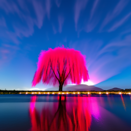 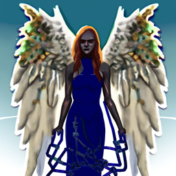 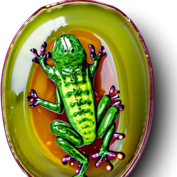Random seed: 100
Part 1: Sampling Loops
Part 1.1: Implementing the Forward Process
Camanile images with noise levels: 250, 500, 750.


Part 1.2: Classical Denoising
Camanile images with noise levels: 250, 500, 750 along with their Gaussian-denoised counterparts.
 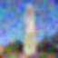
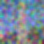
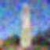
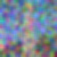Part 1.3: One Step Denoising
Original Image

Camanile images with noise levels: 250, 500, 750 along with their one-step-denoised counterparts.


Part 1.4: Iterative Denoising
Camanile images every 5th loop of denoising using iterative denoising.
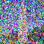 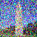 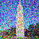 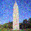 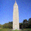 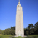Final image using iterative denoising, using one denoising step, and using gaussian blurring:
Part 1.5: Diffusion Model Sampling
5 sampled images of a diffusion model using the prompt: "a high quality photo".
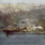 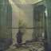 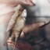 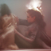Part 1.6: Classifier-Free Guidance
5 sampled images of a diffusion model using the prompt: "a high quality photo". CFG scale y = 7.
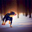Part 1.7.1: Image-to-image Translation
Orignal Images
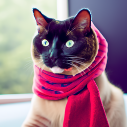
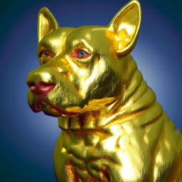
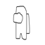
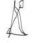
Edits of the Campanile image, using the prompt, "a high quality photo", at noise levels [1, 3, 5, 7, 10, 20].
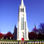
Edits of "a cat wrapped in a scarf" image, using the prompt, "a high quality photo", at noise levels [1, 3, 5, 7, 10, 20].
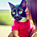Edits of "a dog made of gold" image, using the prompt, "a high quality photo", at noise levels [1, 3, 5, 7, 10, 20].
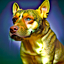Edits of zero image, using the prompt, "a high quality photo", at noise levels [1, 3, 5, 7, 10, 20].
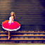
Edits of amogus image, using the prompt, "a high quality photo", at noise levels [1, 3, 5, 7, 10, 20].
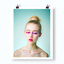 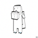Edits of bow image, using the prompt, "a high quality photo", at noise levels [1, 3, 5, 7, 10, 20].
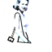 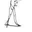Part 1.7.2: Impainting
Orignal Images and Impainted Versions
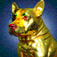
Part 1.7.3: Text-Conditional Image-to_image Translation
Original Images
Willow Tree to Campanile
 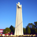
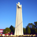Black Knight to Zero
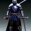 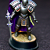
Cat in Scarf to Gold Dog
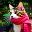 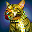Part 1.8: Visual Anagrams
Embeddings: "A cat wearing a scarf", "A dog made of gold"
Embeddings: "A black knight", "An angel wrapped in chains"
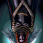 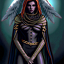Part 1.9: Hybrid Images
Embeddings: "An angel wrapped in chains", "A black knight"
Embeddings: "A pickle the shape of a frog", "A willow tree in the middle of a glowing pond"
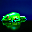Part B
Part 1: Training a Single-step Denoising UNet
Part 1.2: Using the UNet to Train a Denoiser
Noised images. sigma = [0.0, 0.2, 0.4, 0.5, 0.6, 0.8, 1.0]
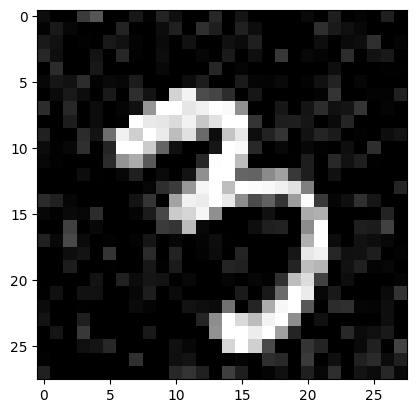 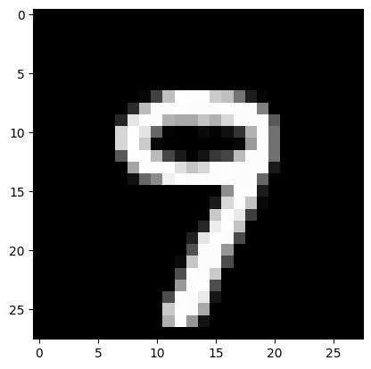 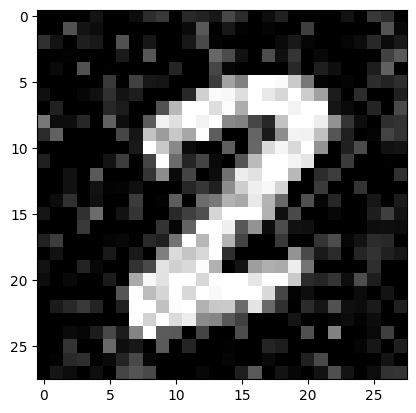 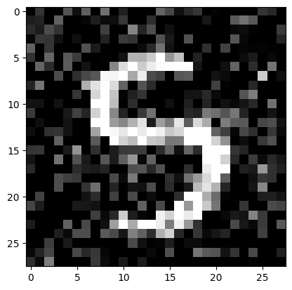 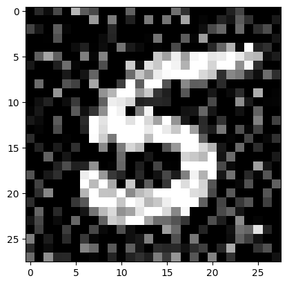 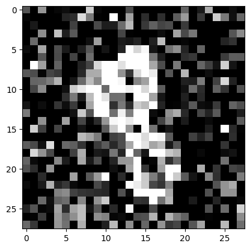 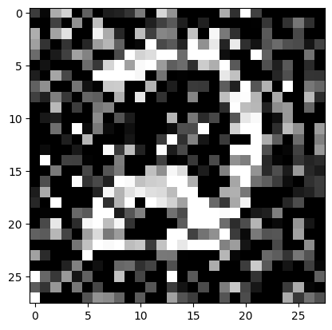Part 1.2.1: Training
Training loss curve with sigma = 0.5

Sample results on test set with noise level 0.5 (In, Noisy, Out), epoch = 1
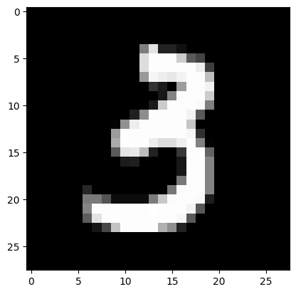 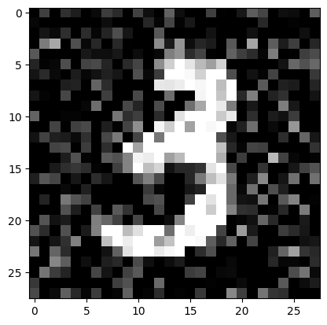 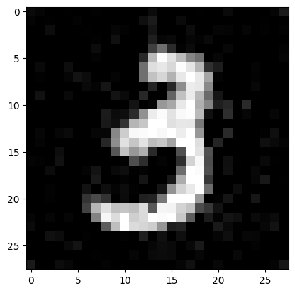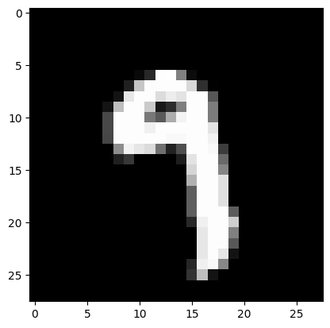 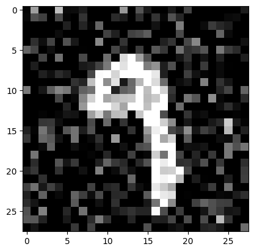 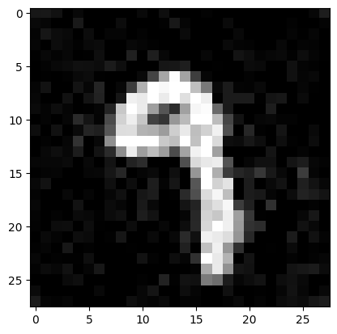
Sample results on test set with noise level 0.5 (In, Noisy, Out), epoch = 5
Part 1.2.2: Out-of-Distribution Testing
Sample results on test set with out of distribution noise levels. sigma = [0.0, 0.2, 0.4, 0.5, 0.6, 0.8, 1.0]

Part 1.2.3: Denoising Pure Noise
Training loss curve for unet trained with pure noise input.
Sample results on test set for pure noise unet. epoch = 1
Sample results on test set for pure noise unet. epoch = 5
All the sampled outputs look the same, an amalgamation of all the numbers blurred together. This is likely because the model learns the closest thing to the average number because it does not know which number to generate.
Part 2: Training a Flow Matching Model
Part 2.2: Training the Unet
Training loss curve for time condition unet trained with pure noise input.
Part 2.3: Sampling from the Unet
Sample outputs from time-conditioned unet, epoch = 1
Sample outputs from time-conditioned unet, epoch = 5
Sample outputs from time-conditioned unet, epoch = 10
Part 2.5: Training the Unet
Training loss curve for class-conditioned unet trained with pure noise input.
Part 2.6: Sampling from the Unet
Sample outputs from class-conditioned unet, epoch = 1
Sample outputs from class-conditioned unet, epoch = 5

Sample outputs from class-conditioned unet, epoch = 10